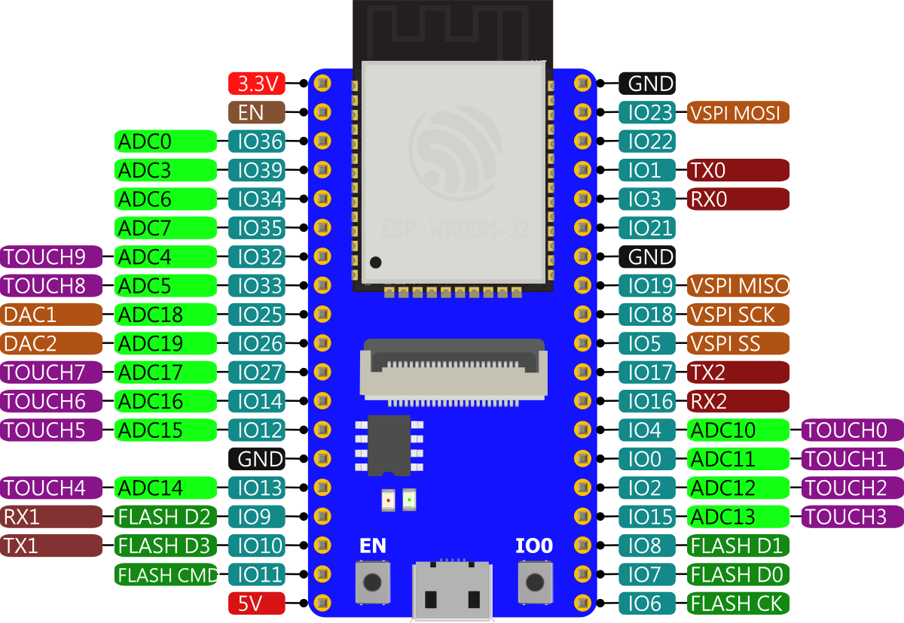

NodeMcu32S-CAM
NodeMCU32S-CAM 是 凱斯 基於 有NCC FCC CE認證的ESP32-WROOM-32D 模組所設計的核心開發板。該開發板延續了 NodeMCU-32S 經典設計，引出大部分I/O至兩側的排針，開發者可以根據自己的需求連接周邊。NodeMCU32S-CAM 加入ESP32-CAM 的Camera 和 SD 的介面，插入Camera 鏡頭和micro SD就是ESP32-CAM，取下Camera 鏡頭和micro SD就可當NodeMCU-32S。NodeMCU32S-CAM 當作ESP32-CAM使用時，不需要再外接上傳燒錄的設備和按任何按鍵就可以全自動燒入。
NodeMCU32S-CAM 有 NodeMCU32S-CAM Plus 和 NodeMCU32S-CAM Lite 2個版本 最主要差別是在有無 8MB PSRAM 和 200 萬 Pixcel 鏡頭。
產品規格
| NodeMCU32S-CAM Plus版本 | NodeMCU32S-CAM Lite 版本 | |
|---|---|---|
| CPU | Dual-core 32bit Xtensa LX6, up to 240MHz | Dual-core 32bit Xtensa LX6, up to 240MHz |
| RAM | 520 KB | 520 KB |
| ROM | 448 KB | 448 KB |
| Flash | 4096 KB | 4096 KB |
| PSRAM | 8192 KB | NO |
| Bluetooth | Bluetooth v4.2 BR/EDR and BLE | Bluetooth v4.2 BR/EDR and BLE |
| WIFI | 802.11 b/g/n/e/i | 802.11 b/g/n/e/i |
| LED | Power and User Program Led | Power and User Program Led |
| Button | EN and IO0 Button | EN and IO0 Button |
| Camera socket | 200w pixcel Camera | NO |
| SD socket | Micro SD socket | Micro SD socket |
| Micro USB | micro USB | micro USB |
| Size | 2.54x5.5cm | 2.54x5.5cm |
PIN definitions

SD 腳位是標準的ESP32CAM 腳位
| 功能 | ESP32腳位 |
|---|---|
| Micro_SD(CLK) | IO14 |
| Micro_SD(CMD) | IO15 |
| Micro_SD(DATA0) | IO2 |
| Micro_SD(DATA1) | IO4 |
| Micro_SD(DATA2) | IO12 |
| Micro_SD(DATA3) | IO13 |
Camera 腳位是標準的ESP32CAM 腳位
| Camera 腳位 | ESP32腳位 |
|---|---|
| SIOD | IO26 |
| SIOCIO | IO27 |
| RESET | EN |
| VSYNC | IO25 |
| PWDN | IO32 |
| HREF | IO23 |
| XCLK | IO0 |
| PCLK | IO22 |
| Y9 | IO35 |
| Y8 | IO34 |
| Y7 | IO39 |
| Y6 | IO36 |
| Y5 | IO21 |
| Y4 | IO19 |
| Y3 | IO18 |
| Y2 | IO5 |
注意事項
手指不要接觸到 主板的排針，會有干擾降低 Camera 的影像傳輸率。
應用圖示